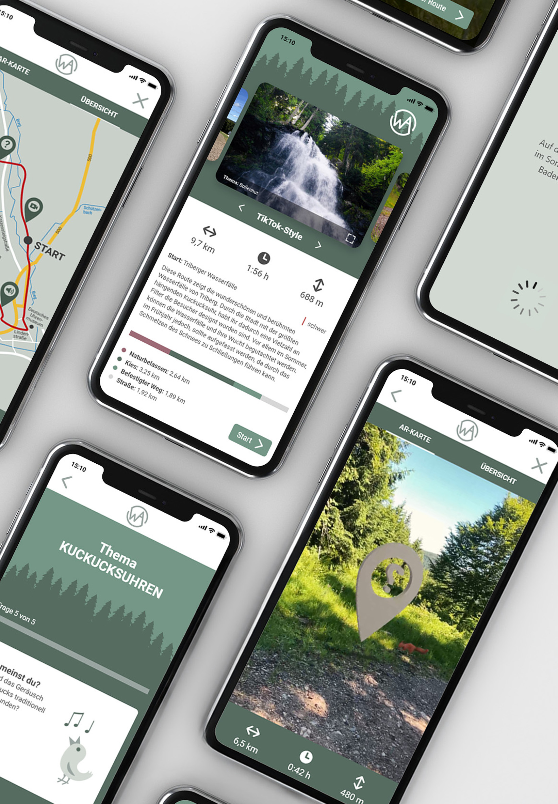
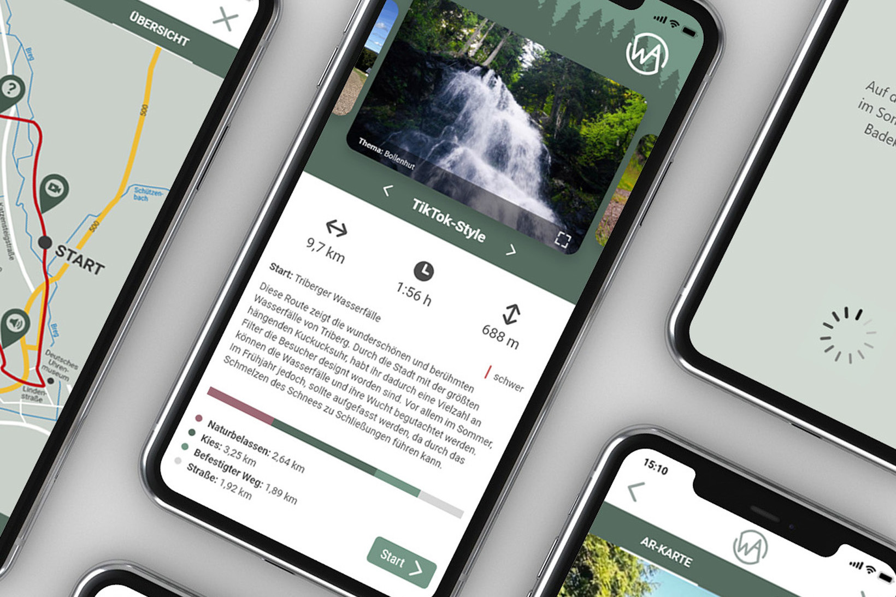

2022
Hochschulprojekt - Prototyp einer Smartphone-App
In dem Hochschulfach "Interface Design" sollte eine interaktive Anwendung
zum Thema Schwarzwald entstehen. Für das Projekt habe ich einen High-Fidelity-Prototypen einer
Smartphone-Wander-App entwickelt. Zielgruppe der App sind junge Menschen, die spielerisch mehr über
die Natur und Traditionen im Schwarzwald lernen möchten.
Dabei kamen hauptsächlich Adobe Programme
wie XD, Illustrator und Aero für die Augmented-Reality-Funktion zum Einsatz.